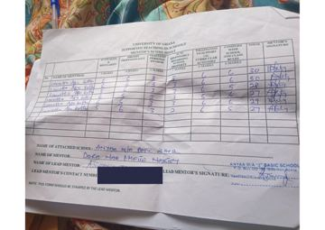

Reflections & Growth
What my internship taught me, and where I want to grow.
Three placements at ANYAA M/A 2 Basic School, from Year 1 to Year 2, showed me how much careful planning and honest reflection go into a good lesson.

Growth Reflection
Teaching JHS 2 at ANYAA M/A 2 Basic School, under my mentor Richard Ayitey, strengthened the three principles that guide me: plan with purpose, teach for understanding, and reflect to improve. It also confirmed my belief that learners understand best when they are doing and discussing, and it is the kind of classroom I want to build.
When I reviewed my teaching philosophy in Year 2, it rested on three ideas: learner-centred learning, inclusivity and equity, and values and character. Compared with Year 1, it draws more on real classroom experience than on theory from books, and it pays closer attention to slow learners and learners with special needs.
“Learners learn best by doing and discussing.”
— Lauretta Kuttin
Areas for Improvement
The areas I am working on as I grow as a teacher.
Communication & Relationships
Improve my communication and interpersonal skills, so I connect well with learners, colleagues and parents.
Self-Confidence
Build confidence in myself and in my abilities as a teacher.
Knowledge & Experience
Gain more knowledge and more practical experience in the classroom.
Problem-Solving & Decisions
Strengthen my problem-solving and decision-making skills.
Reflective Journal
Key moments from my Student Reflective Journals.
Child Study
My child study showed me how a lack of attention and motivation leads to poor performance and low confidence. My mentor supported these learners by helping them whenever they found a task difficult, and by grouping them and encouraging them.
Scope and Sequence
I learned that the scope and sequence of the curriculum stops random jumping between topics, so concepts spiral and deepen each year. I will start lessons with a sequence check and build from recall to new learning.
Knowing My Learners
In my classroom enquiry with four learners, I identified poor performance, low participation and low confidence. I suggested group discussion, role play and motivation to help each learner take part.
Teacher Professionalism
Most teachers arrived before 7:30 am with lesson notes and TLMs ready. From video playback I chose three traits for my own practice: emotional support for learners, effective use of TLMs and technology, and reflecting on my own lessons.
Mentor Feedback
My mentor, Dora Naa Omese Nartey, scored me every week in Year 1, Semester 2. My totals ranged from 27 to 30 out of 30.
